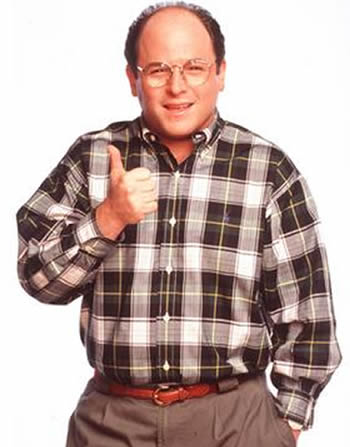

About George Costanza
George is Jerry Seinfeld's neurotic friend. He sometimes lives with his parents, Estelle and Frank Costanza, a bitter couple who are as neurotic as their son. Chances are George's personality traits of being bitter, miserly, selfish, greedy and dishonest come from his childhood background. As a teenager, he was tormented by his gym teacher, Mr. Heyman, who intentionally mispronounced George's last name as "Can't Stand Ya." George and Jerry attended public school together, setting the dynamic for their later relationship. George claims that he and Jerry met in gym class when George, climbing rope, fell on Jerry.
George has numerous psychological problems, including: sociopathy (officially referred to as Antisocial Personality Disorder), narcissism, habitual lying, low self-esteem, sudden fits of anger, hypochondriasis, impulsive acts of ill-considered cheapness, selfishness, obsessiveness, living in fantasy. Like Kramer , he would often concoct elaborate plots to weasel out of relational, financial, or legal obligations, always with unexpected and negative consequences. George's lying, however, is often seen as a gift in the eyes of himself and his friends. It is noted in some episodes that he can even beat a lie-detector test. When Jerry tells Elaine about his plan of beating a lie detector instead of somehow avoiding it, she replies, "Who do you think you are, Costanza?"
Famous George Quotes
- I'm Disturbed, I'm Depressed, I'm Inadequate – I've Got It All!
- Squirrel? Well, We Have No Deal With Them!
- You're Giving ME The 'It's Not You, It's Me' Routine? I INVENTED 'It's Not You, It's Me'!